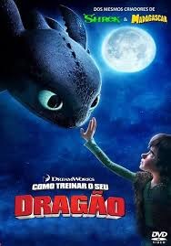
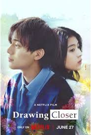
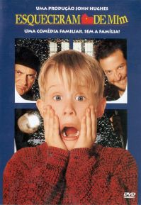
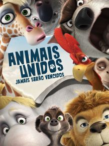

Olá querido telespectador,prazer em ter você em minha página! Vamos ver alguns filmes interessantes que recomendo assistir ,descansar e ainda conseguir tirar algumas reflexões . Aqui você vai encontar indicações de filmes de diversos temas como: Romance, Fantasia, Ação ,Animação, Drama, Comédia, Ficção Científica e Aventura. Tenha uma boa sessão ! (Clique na foto do para conhecer mais detalhes sobre o filme).
Aqui está o Top 10
- Como Treinar seu Dragão 
- Flubber- Uma Invenção Desmiolada
- Marte Precisa de Mães
- Até Que as Cores Acabem 
- Passagem Para o Futuro
- Histórias Cruzadas
- Esqueceram de Mim 
- O Retorno de Johnny English
- Feios
- Animais Unidos Jamais Serão Vencidos 
Este desenho é uma trilogia , ou seja, há três sequências desse filme. Ele é o primeiro da lista porque apesar de ser um desenho nos faz meditar no esforço de escrever o próprio caminho, de como uma amizade inimaginada pode ser a mais forte e também como ser você mesmo é melhor do que criar um perfil do qual todos esperam. Além da importancia de superar o medo e ser corajosos apesar das dificuldades .A Amizade não pode ser resumida em uma palavra !

No filme podemos tirar várias risadas e meditar na importancia de não desistir ,de confiar em nós mesmos e também valorizar quem nos acompanha a cada passo. Nos dar mais uma chance pode não ser tão ruim.

Esse filme nos ajuda a refletir que é bom valorizar o que temos , ás vezes pode ser o que mais precisamos. Nos esforçar em alcançar o objetivo até o fim ,criando novos laços que podem surpreender mais e mais.
O filme mostra que podemos viver cada momento com alegria e resistir contando nossa história até o fim. Podemos lutar por nossos sonhos. E que também o importante pode não ser o que fazemos pra sociedade ,mas sim, para quem amamos ,quem é próximo a nós. Deixando memórias preciosas !

Esse filme nos deixa uma meditação oculta , ele nos incentiva a procurar o verão apesar inverno. Apesar de ser ficção e não muito realista. Mas,podemos pensar sobre as decisões da vida : "se eu tivesse certeza que tudo dará certo,o que eu faria? Qual "verão"eu buscaria?"
Nos deixa refletir na história sobre o que já aconteceu , e que somos seres humanos antes de qualquer hierarquia! E também em como a compaixão é bem recebida em todo lugar,tendo boas amizades/companhias podemos ser fortes e resistir a todas as situações . Assim contando a nossa própria história, não se deixando intimidar!
Uma comédia hilária que tira risada de muitos . Ele tem uma longa sequência porém recomendo apenas o primeiro e segundo filme . Ele apesar de "inocente" pode nos ensinar que nem sempre o que desejamos pode ser bom, e também (no segundo filme) nos mostra que boas experiências podem acontecer apesar de imprevistos.
Para mim é quase um clássico , traz muita comédia,romance e ação . Apesar de nosso jeito não ser como a maioria espera, e das companhias/amizades que temos não serem verdadeiras podemos encontrar um novo caminho e ter nossa "missão" realizada com sucesso! Continuando a ser nós mesmos.
Um baita filme que tem temas delicados sobre o que se vê bastante no "século 21". Estética e esteriótipos podem não deixar vermos a realidade . Analisar e tomar a decisão que achamos certa, pode ou não dar bons resultados. Temos que analisar todos os ângulos e escolher ,sendo responsáveis pelas consequências !
Uma animaçâo que não pode ser subestimada! Ela traz assuntos e realidades fortes e atuais, principalmente sobre a questão ambiental da Terra, que nos deixam refletir: "Certas coisas valem realmente a pena? Qual pode ser a consequência disso?". Também nos relembra que a união com pessoas certas nos deixam mais fortes .